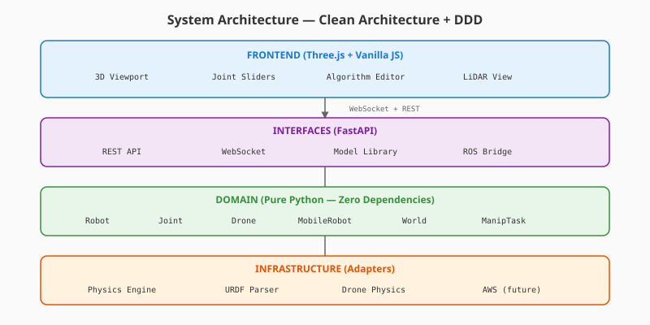

RoboSim — Technical Documentation
Technical details of the robotics simulation platform developed for the Kiro BuildFest Hackathon 2026. This document covers the physics engine, domain ontology, API specification, and system architecture.
1. Forward Kinematics Engine
The simulation computes link positions using cumulative homogeneous transforms through the kinematic tree. For each joint in the chain:
# Core FK computation (simplified)
# T_child = T_parent * R(axis, q) * T_origin
def _compute_fk(robot_state):
for joint in kinematic_tree_bfs:
# Rotation matrix via Rodrigues' formula
joint_rot = rotation_matrix(axis, q)
# Cumulative rotation: child inherits all parent rotations
child_rot = mat_mul(parent_rot, joint_rot)
# Transform origin offset by parent rotation
rotated_offset = mat_vec(parent_rot, [ox, oy, oz])
# World position = parent + rotated offset
child_pos = parent_pos + rotated_offsetThe rotation matrix R(â, q) for axis-angle representation uses Rodrigues' formula:
R(â, q) = cos(q)·I + (1 - cos q)·ââᵀ + sin(q)·[â]×
where [â]× is the skew-symmetric matrix:
[â]× = | 0 -az ay |
| az 0 -ax |
|-ay ax 0 |This propagates correctly through branching kinematic trees, essential for quadrupeds (4 independent leg chains from a single trunk).
2. Joint Control — PD Controller
Each actuated joint runs a proportional-derivative controller:
τ = Kp · (q_target - q_current) - Kd · q̇_current
# With effort clamping:
τ = clamp(τ, -max_effort, max_effort)
# Semi-implicit Euler integration:
q̇_new = q̇ + τ · dt
q_new = q + q̇_new · dtDefault gains: Kp=50, Kd=5. Configurable per-joint from URDF dynamics parameters.
3. Drone Flight Dynamics
6-DOF rigid body simulation with rotor thrust model:
# Forces in world frame:
F_thrust = R · [0, 0, F_total]ᵀ (rotated by body orientation)
F_drag = -drag_coefficient · velocity
F_gravity = [0, 0, -m·g]ᵀ
# Linear acceleration:
a = (F_thrust + F_drag + F_gravity) / mass
# Angular dynamics with PID attitude stabilization:
τ_roll = Kp_roll · (target_roll - current_roll) - Kd_roll · ω_x
τ_pitch = Kp_pitch · (target_pitch - current_pitch) - Kd_pitch · ω_y
τ_yaw = Kp_yaw · (target_yaw_rate - ω_z)
# Quadcopter mixer (X configuration):
thrust[0] = base + pitch + roll - yaw # Front-Left
thrust[1] = base + pitch - roll + yaw # Front-Right
thrust[2] = base - pitch - roll - yaw # Back-Right
thrust[3] = base - pitch + roll + yaw # Back-Left4. Mobile Robot Kinematics
Three drive models implemented:
# Differential Drive (TurtleBot):
dx = v · cos(θ) · dt
dy = v · sin(θ) · dt
dθ = ω · dt
# Ackermann Steering (Racecar):
R = L / tan(δ) # Turning radius
ω = v / R
dx = v · cos(θ) · dt
dy = v · sin(θ) · dt
dθ = ω · dt
# Omnidirectional (Mecanum):
dx = (vx·cos θ - vy·sin θ) · dt
dy = (vx·sin θ + vy·cos θ) · dt
dθ = ω · dt5. Domain Ontology

Enterprise-grade domain model following DDD aggregate patterns:
World (Aggregate Root)
├── PhysicsConfig {gravity, time_step, solver_iterations}
├── SimulationState {status, sim_time, step_count}
├── Robot (Aggregate)
│ ├── Link {name, inertial, visuals[], collisions[]}
│ ├── Joint {type, parent, child, origin, axis, limits, state}
│ ├── Sensor {type, parent_link, update_rate, noise}
│ └── Actuator {joint, control_mode, pid_gains, max_effort}
├── Drone (Aggregate)
│ ├── DroneConfig {type, mass, arm_length, rotors[]}
│ ├── DroneState {pose, velocity, angular_vel, battery}
│ └── DroneCommand {thrust, roll, pitch, yaw_rate}
├── MobileRobot (Aggregate)
│ ├── MobileRobotConfig {drive_type, wheel_radius, track_width}
│ ├── MobileRobotState {pose, velocity, heading, odometry}
│ └── MobileRobotCommand {linear_x, linear_y, angular_z}
└── ManipulationTask
├── GraspableObject {shape, pose, mass, friction}
├── PlacementZone {pose, tolerance, accepts_shapes}
└── ManipulationGoal {object, target_zone, tolerance}6. API Specification
RESTful API with WebSocket for real-time streaming:
# World Management
POST /worlds → Create simulation world
GET /worlds → List active worlds
GET /worlds/{id} → Get world state
POST /worlds/{id}/control → Start/pause/stop/reset
# Robot Control
POST /worlds/{id}/robots → Create robot from params
POST /worlds/{id}/robots/upload → Upload URDF file
POST /worlds/{id}/joints → Send joint commands
GET /worlds/{id}/robots/{rid}/geometry → Get 3D geometry
# Model Library
GET /api/models/catalog → Browse 10 verified models
POST /api/models/fetch → One-click load from GitHub
GET /api/models/categories → List robot categories
# Drones & Mobile Robots
POST /api/drones → Create drone
POST /api/drones/command → Flight commands
POST /api/mobile-robots → Create ground robot
POST /api/mobile-robots/command → Drive commands
# WebSocket (real-time)
WS /ws/{world_id} → 60Hz state streaming7. URDF Parser
Full XML parser supporting the URDF specification:
# Parsed elements:
- <robot>: name, metadata
- <link>: inertial (mass, inertia tensor), visual (geometry, material), collision
- <joint>: type, parent/child, origin (xyz + rpy), axis, limits, dynamics
- Geometry: box, cylinder, sphere, mesh (with scale)
- Joint types: revolute, continuous, prismatic, fixed, floating, planar
# Supports both serial chains (arms) and branching trees (quadrupeds)
# Fixed joints included in FK for proper spatial offsets8. Test Suite
62 automated tests covering all layers:
# Run tests:
python -m pytest tests/ -v
# Coverage:
- Domain models: Vector3, Quaternion, Joint, Robot, World, Drone, MobileRobot
- Physics engine: FK, rotation matrices, joint control, reset
- URDF loader: parsing, limits, fixed joints, joint types
- API integration: all endpoints, error handling, validation
- Drone/Mobile: create, command, state queries
- Model library: catalog, search, fetch9. Deployment
# Local development:
pip install -r requirements.txt
python server.py
# → http://localhost:8000
# Production (Render.com):
# .python-version pinned to 3.11.11
# Auto-deploys on push to main branch
# Free tier: 512MB RAM, sufficient for kinematic simulation
# Docker:
docker build -t robosim .
docker run -p 8000:8000 robosim